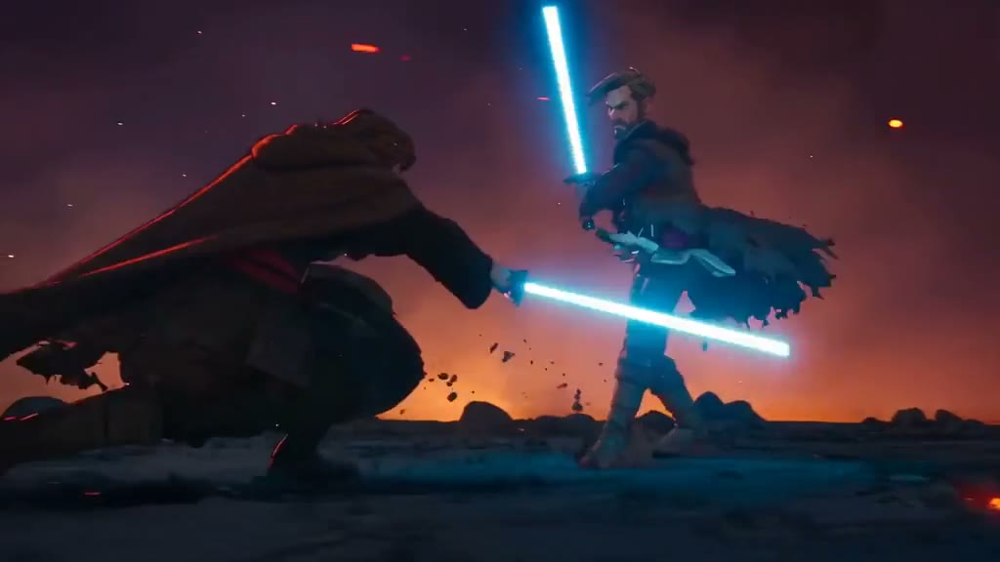
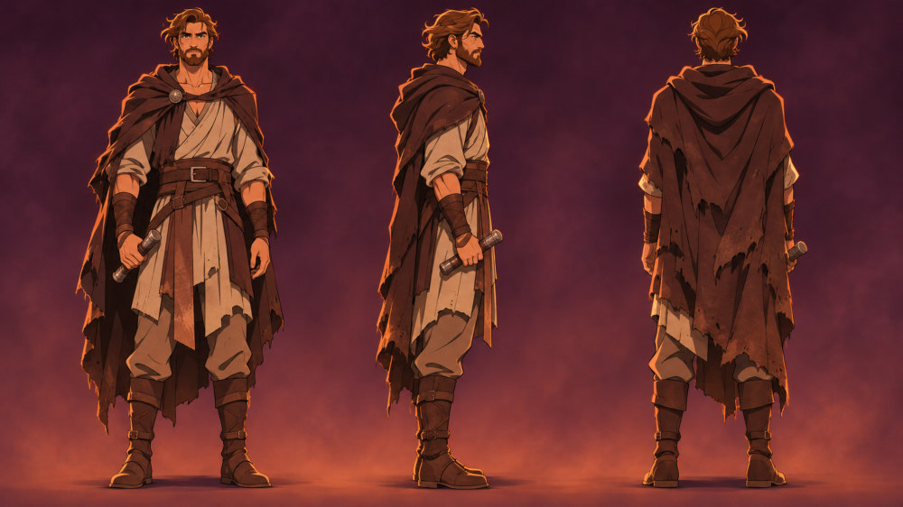
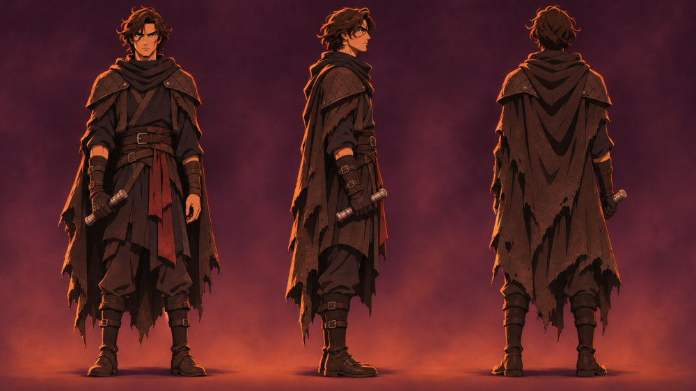
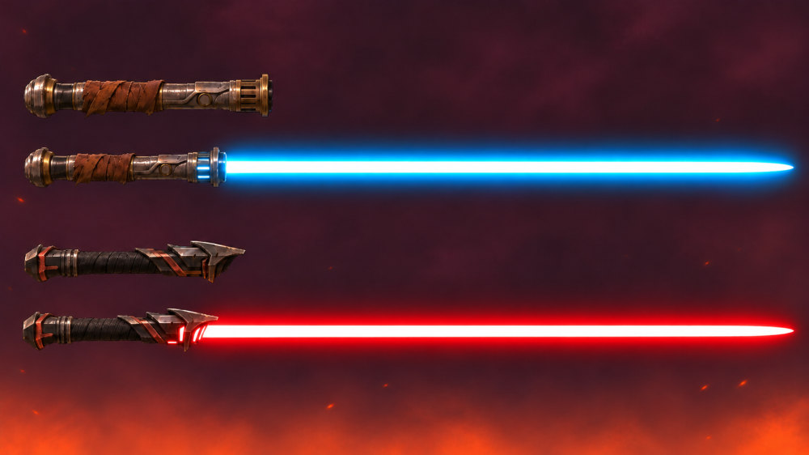

- Süre
- 28 sn
- Format
- 16:9 · 24 fps
- Stil
- Stilize 3B animasyon
- Yıl
- 2026

Ön, yan ve arka görünüşlü karakter tasarım sayfalarıyla başlayıp aynı iki karakteri yapay zekâ ile canlandırdığım, Star Wars’tan ilham alan animasyon tarzında bir ışın kılıcı düellosu. Odak: karakter tutarlılığı, sinematik kamera açıları ve lav turuncusu ile kılıç mavisinin kontrastı.


